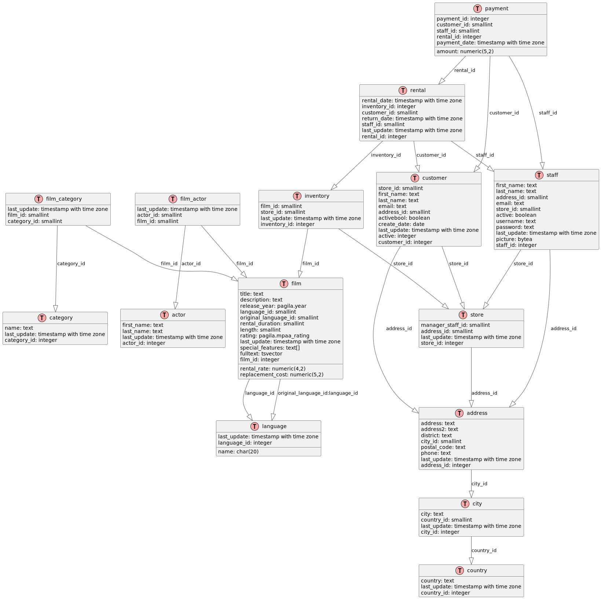

1. Base de données Pagila
Création
DEA
Code
@startuml
'top to bottom direction
'skinparam linetype polyline
!define TABLE(name,desc) class name as "desc" << (T,#FFAAAA) >>
!define PK(x) <u>x</u>
!define FK(x) <i>x</i>
hide empty methods
hide empty fields
TABLE(actor, "actor") {
first_name: text
last_name: text
last_update: timestamp with time zone
actor_id: integer
}
TABLE(address, "address") {
address: text
address2: text
district: text
city_id: smallint
postal_code: text
phone: text
last_update: timestamp with time zone
address_id: integer
}
TABLE(category, "category") {
name: text
last_update: timestamp with time zone
category_id: integer
}
TABLE(city, "city") {
city: text
country_id: smallint
last_update: timestamp with time zone
city_id: integer
}
TABLE(country, "country") {
country: text
last_update: timestamp with time zone
country_id: integer
}
TABLE(customer, "customer") {
store_id: smallint
first_name: text
last_name: text
email: text
address_id: smallint
activebool: boolean
create_date: date
last_update: timestamp with time zone
active: integer
customer_id: integer
}
TABLE(film, "film") {
title: text
description: text
release_year: pagila.year
language_id: smallint
original_language_id: smallint
rental_duration: smallint
rental_rate: numeric(4,2)
length: smallint
replacement_cost: numeric(5,2)
rating: pagila.mpaa_rating
last_update: timestamp with time zone
special_features: text[]
fulltext: tsvector
film_id: integer
}
TABLE(film_actor, "film_actor") {
last_update: timestamp with time zone
actor_id: smallint
film_id: smallint
}
TABLE(film_category, "film_category") {
last_update: timestamp with time zone
film_id: smallint
category_id: smallint
}
TABLE(inventory, "inventory") {
film_id: smallint
store_id: smallint
last_update: timestamp with time zone
inventory_id: integer
}
TABLE(language, "language") {
name: char(20)
last_update: timestamp with time zone
language_id: integer
}
TABLE(payment, "payment") {
payment_id: integer
customer_id: smallint
staff_id: smallint
rental_id: integer
amount: numeric(5,2)
payment_date: timestamp with time zone
}
TABLE(rental, "rental") {
rental_date: timestamp with time zone
inventory_id: integer
customer_id: smallint
return_date: timestamp with time zone
staff_id: smallint
last_update: timestamp with time zone
rental_id: integer
}
TABLE(staff, "staff") {
first_name: text
last_name: text
address_id: smallint
email: text
store_id: smallint
active: boolean
username: text
password: text
last_update: timestamp with time zone
picture: bytea
staff_id: integer
}
TABLE(store, "store") {
manager_staff_id: smallint
address_id: smallint
last_update: timestamp with time zone
store_id: integer
}
address -[#595959,plain]-^ city : "city_id"
city -[#595959,plain]-^ country : "country_id"
customer -[#595959,plain]-^ address : "address_id"
customer -[#595959,plain]-^ store : "store_id"
film -[#595959,plain]-^ language : "language_id"
film -[#595959,plain]-^ language : "original_language_id:language_id"
film_actor -[#595959,plain]-^ actor : "actor_id"
film_actor -[#595959,plain]-^ film : "film_id"
film_category -[#595959,plain]-^ category : "category_id"
film_category -[#595959,plain]-^ film : "film_id"
inventory -[#595959,plain]-^ film : "film_id"
inventory -[#595959,plain]-^ store : "store_id"
payment -[#595959,plain]-^ customer : "customer_id"
payment -[#595959,plain]-^ rental : "rental_id"
payment -[#595959,plain]-^ staff : "staff_id"
rental -[#595959,plain]-^ customer : "customer_id"
rental -[#595959,plain]-^ inventory : "inventory_id"
rental -[#595959,plain]-^ staff : "staff_id"
staff -[#595959,plain]-^ address : "address_id"
staff -[#595959,plain]-^ store : "store_id"
store -[#595959,plain]-^ address : "address_id"
@enduml


Requêtes
1. Trouver des films d'au moins 2 heures
Difficulté : 1
Code
SELECT title, length
FROM film
WHERE length >= 120
ORDER BY length DESC;
2. Trouver l'identifiant et la description du film 'ACADEMY DINOSAUR'
Difficulté : 1
Code
SELECT film_id, description
FROM film
WHERE title = 'ACADEMY DINOSAUR';
3. Trouver les catégories de 'ACADEMY DINOSAUR'
Difficulté : 2
Code
SELECT c.name
FROM category c
JOIN film_category fc ON c.category_id = fc.category_id
JOIN film f ON fc.film_id = f.film_id
WHERE f.title = 'ACADEMY DINOSAUR';
4. Trouver les films sans catégories
Difficulté : 2
Code
SELECT f.title
FROM film f
LEFT JOIN film_category fc ON f.film_id = fc.film_id
WHERE fc.category_id IS NULL;
5. Trouver les catégories sans films
Meilleure réponse :
Difficulté : 2
Code
SELECT c.name
FROM category c
LEFT JOIN film_category fc ON c.category_id = fc.category_id
WHERE fc.film_id IS NULL;
Autres réponses :
Code
select c.category_id, c.name
from category c
left join film_category fc on c.category_id = fc.category_id
group by c.category_id, c.name
having count(fc.film_id) = 0;
Code
select category_id, name
from category
where category_id not in (select category_id from film_category);
Code
select category_id, name
from category c
where not exists(select fc.category_id
from film_category fc
where fc.category_id = c.category_id);
Code
select category_id, name
from category c
except
select c.category_id, c.name
from category c
inner join film_category fc on fc.category_id = c.category_id;
Code
select c.category_id, name
from category c
inner join (select category_id
from category c
except
select fc.category_id
from film_category fc) as T
on c.category_id = T.category_id;
Code
with T as (select category_id
from category c
except
select fc.category_id
from film_category fc)
select c.category_id, name
from category c
inner join T on c.category_id = T.category_id;
6. Trouver les films d'action
Difficulté : 2
Code
SELECT f.title
FROM film f
JOIN film_category fc ON f.film_id = fc.film_id
JOIN category c ON fc.category_id = c.category_id
WHERE c.name = 'Action';
7. Trouver le nombre de films dans la catégorie 'Action'
Difficulté : 2
Code
SELECT COUNT(*) AS action_film_count
FROM film_category fc
JOIN category c ON fc.category_id = c.category_id
WHERE c.name = 'Action';
8. Nombre de films dans chaque catégorie
Difficulté : 3
Code
SELECT c.name, COUNT(fc.film_id) AS film_count
FROM category c
LEFT JOIN film_category fc ON c.category_id = fc.category_id
GROUP BY c.category_id, c.name
ORDER BY film_count DESC;
9. Trouver le nombre de catégories pour chaque film
Difficulté : 3
Code
SELECT f.title, COUNT(fc.category_id) AS category_count
FROM film f
LEFT JOIN film_category fc ON f.film_id = fc.film_id
GROUP BY f.film_id, f.title
ORDER BY category_count DESC;
10. Trouver le nombre de films
Difficulté : 1
Code
SELECT COUNT(*) AS total_films
FROM film;
11. Trouver le nombre de langues différentes dans la table des langues
Difficulté : 1
Code
SELECT COUNT(*) AS language_count
FROM language;
12. Trouver le nombre de langues différentes dans la table des films
Difficulté : 1
Code
SELECT COUNT(DISTINCT language_id) AS film_language_count
FROM film;
13. Catégorie avec le plus grand nombre de films
Difficulté : 3
Code
SELECT c.name, COUNT(f.film_id) AS film_count
FROM category c
JOIN film_category fc ON c.category_id = fc.category_id
JOIN film f ON fc.film_id = f.film_id
GROUP BY c.category_id, c.name
ORDER BY film_count DESC
LIMIT 1;
Difficulté : 4
Code
WITH category_counts AS (SELECT c.category_id, c.name, COUNT(f.film_id) AS film_count
FROM category c
JOIN film_category fc ON c.category_id = fc.category_id
JOIN film f ON fc.film_id = f.film_id
GROUP BY c.category_id, c.name),
max_count AS (SELECT MAX(film_count) AS max_film_count
FROM category_counts)
SELECT cc.name AS category, cc.film_count
FROM category_counts cc,
max_count mc
WHERE cc.film_count = mc.max_film_count
ORDER BY cc.name;
14. Liste des films les plus loués
Difficulté : 3
Pour obtenir la liste des 10 films les plus loués, avec leur titre et le nombre de locations :
Code
SELECT f.title, COUNT(r.rental_id) AS rental_count
FROM film f
JOIN inventory i ON f.film_id = i.film_id
JOIN rental r ON i.inventory_id = r.inventory_id
GROUP BY f.film_id, f.title
ORDER BY rental_count DESC
LIMIT 10;
Difficulté : 4
Code
WITH actor_counts AS (
SELECT a.actor_id, a.first_name, a.last_name, COUNT(fa.film_id) AS film_count
FROM actor a
JOIN film_actor fa ON a.actor_id = fa.actor_id
GROUP BY a.actor_id, a.first_name, a.last_name
),
top_5_count AS (
SELECT film_count
FROM actor_counts
ORDER BY film_count DESC
LIMIT 1 OFFSET 4
)
SELECT ac.first_name, ac.last_name, ac.film_count
FROM actor_counts ac, top_5_count t5c
WHERE ac.film_count >= t5c.film_count
ORDER BY ac.film_count DESC, ac.last_name, ac.first_name;
15. Revenus totaux par catégorie de film
Difficulté : 3
Pour calculer les revenus totaux générés par chaque catégorie de film :
Code
SELECT c.name AS category, SUM(p.amount) AS total_revenue
FROM category c
JOIN film_category fc ON c.category_id = fc.category_id
JOIN film f ON fc.film_id = f.film_id
JOIN inventory i ON f.film_id = i.film_id
JOIN rental r ON i.inventory_id = r.inventory_id
JOIN payment p ON r.rental_id = p.rental_id
GROUP BY c.category_id, c.name
ORDER BY total_revenue DESC;
16. Clients ayant dépensé le plus
Difficulté : 3
Pour obtenir les 10 clients ayant dépensé le plus, avec leur nom et le montant total :
Code
SELECT c.first_name, c.last_name, SUM(p.amount) AS total_spent
FROM customer c
JOIN payment p ON c.customer_id = p.customer_id
GROUP BY c.customer_id, c.first_name, c.last_name
ORDER BY total_spent DESC
LIMIT 10;
Difficulté : 4
Code
WITH customer_spending AS (SELECT c.customer_id, c.first_name, c.last_name, SUM(p.amount) AS total_spent
FROM customer c
JOIN payment p ON c.customer_id = p.customer_id
GROUP BY c.customer_id, c.first_name, c.last_name),
top_10_spent AS (SELECT total_spent
FROM customer_spending
ORDER BY total_spent DESC
LIMIT 1 OFFSET 9)
SELECT cs.first_name, cs.last_name, cs.total_spent
FROM customer_spending cs,
top_10_spent t10s
WHERE cs.total_spent >= t10s.total_spent
ORDER BY cs.total_spent DESC, cs.last_name, cs.first_name;
17. Films disponibles dans un magasin spécifique
Difficulté : 2
Pour obtenir la liste des films disponibles dans le magasin avec l'ID 1 :
Code
SELECT DISTINCT f.title
FROM film f
JOIN inventory i ON f.film_id = i.film_id
WHERE i.store_id = 1
ORDER BY f.title;
18. Quels sont les 5 acteurs qui ont joué dans le plus grand nombre de films ?
Difficulté : 3
Code
SELECT a.actor_id, a.first_name, a.last_name, COUNT(fa.film_id) AS film_count
FROM actor a
JOIN film_actor fa ON a.actor_id = fa.actor_id
GROUP BY a.actor_id, a.first_name, a.last_name
ORDER BY film_count DESC
LIMIT 5;
Difficulté : 4
Code
WITH actor_counts AS (SELECT a.actor_id, a.first_name, a.last_name, COUNT(fa.film_id) AS film_count
FROM actor a
JOIN film_actor fa ON a.actor_id = fa.actor_id
GROUP BY a.actor_id, a.first_name, a.last_name),
top_5_count AS (SELECT film_count
FROM actor_counts
ORDER BY film_count DESC
LIMIT 1 OFFSET 4)
SELECT ac.first_name, ac.last_name, ac.film_count
FROM actor_counts ac,
top_5_count t5c
WHERE ac.film_count >= t5c.film_count
ORDER BY ac.film_count DESC, ac.last_name, ac.first_name;
19. Quel est le revenu total généré par chaque magasin ?
Difficulté : 3
Code
SELECT s.store_id, s.address_id, SUM(p.amount) AS total_revenue
FROM store s
JOIN staff st ON s.store_id = st.store_id
JOIN payment p ON st.staff_id = p.staff_id
GROUP BY s.store_id, s.address_id
ORDER BY total_revenue DESC;
20. Quels sont les 10 films les plus rentables (basé sur le montant total des paiements) ?
Difficulté : 3
Code
SELECT f.film_id, f.title, SUM(p.amount) AS total_revenue
FROM film f
JOIN inventory i ON f.film_id = i.film_id
JOIN rental r ON i.inventory_id = r.inventory_id
JOIN payment p ON r.rental_id = p.rental_id
GROUP BY f.film_id, f.title
ORDER BY total_revenue DESC
LIMIT 10;
Difficulté : 4
Code
WITH film_revenue AS (SELECT f.film_id, f.title, SUM(p.amount) AS total_revenue
FROM film f
JOIN inventory i ON f.film_id = i.film_id
JOIN rental r ON i.inventory_id = r.inventory_id
JOIN payment p ON r.rental_id = p.rental_id
GROUP BY f.film_id, f.title),
top_10_revenue AS (SELECT total_revenue
FROM film_revenue
ORDER BY total_revenue DESC
LIMIT 1 OFFSET 9)
SELECT fr.film_id, fr.title, fr.total_revenue
FROM film_revenue fr,
top_10_revenue t10r
WHERE fr.total_revenue >= t10r.total_revenue
ORDER BY fr.total_revenue DESC, fr.title;
21. Quelle est la durée moyenne de location pour chaque catégorie de film ?
Difficulté : 4
Code
SELECT c.name, AVG(EXTRACT(DAY FROM (r.return_date - r.rental_date))) AS avg_rental_duration
FROM category c
JOIN film_category fc ON c.category_id = fc.category_id
JOIN film f ON fc.film_id = f.film_id
JOIN inventory i ON f.film_id = i.film_id
JOIN rental r ON i.inventory_id = r.inventory_id
WHERE r.return_date IS NOT NULL
GROUP BY c.category_id, c.name
ORDER BY avg_rental_duration DESC;
22. Quels sont les clients qui n'ont pas effectué de location depuis plus de 3 mois ?
Difficulté : 4
Code
SELECT c.customer_id, c.first_name, c.last_name, MAX(r.rental_date) AS last_rental_date
FROM customer c
LEFT JOIN rental r ON c.customer_id = r.customer_id
GROUP BY c.customer_id, c.first_name, c.last_name
HAVING MAX(r.rental_date) < CURRENT_DATE - INTERVAL '3 months'
OR MAX(r.rental_date) IS NULL
ORDER BY last_rental_date;
23. Quels sont les films qui n'ont jamais été loués ?
Difficulté : 3
Code
SELECT f.film_id, f.title
FROM film f
LEFT JOIN inventory i ON f.film_id = i.film_id
LEFT JOIN rental r ON i.inventory_id = r.inventory_id
WHERE r.rental_id IS NULL;
24. Quel est le client qui a dépensé le plus d'argent, et combien a-t-il dépensé ?
Difficulté : 3
Code
SELECT c.customer_id, c.first_name, c.last_name, SUM(p.amount) AS total_spent
FROM customer c
JOIN payment p ON c.customer_id = p.customer_id
GROUP BY c.customer_id, c.first_name, c.last_name
ORDER BY total_spent DESC
LIMIT 1;
Difficulté : 4
Code
WITH customer_spending AS (SELECT c.customer_id, c.first_name, c.last_name, SUM(p.amount) AS total_spent
FROM customer c
JOIN payment p ON c.customer_id = p.customer_id
GROUP BY c.customer_id, c.first_name, c.last_name),
max_spending AS (SELECT MAX(total_spent) AS max_amount
FROM customer_spending)
SELECT cs.customer_id, cs.first_name, cs.last_name, cs.total_spent
FROM customer_spending cs,
max_spending ms
WHERE cs.total_spent = ms.max_amount
ORDER BY cs.last_name, cs.first_name;
25. Quels sont les 5 couples d'acteurs qui ont joué ensemble dans le plus grand nombre de films ?
Difficulté : 5
Code
SELECT a1.actor_id AS actor1_id,
a1.first_name AS actor1_first_name,
a1.last_name AS actor1_last_name,
a2.actor_id AS actor2_id,
a2.first_name AS actor2_first_name,
a2.last_name AS actor2_last_name,
COUNT(*) AS films_together
FROM film_actor fa1
JOIN film_actor fa2 ON fa1.film_id = fa2.film_id AND fa1.actor_id < fa2.actor_id
JOIN actor a1 ON fa1.actor_id = a1.actor_id
JOIN actor a2 ON fa2.actor_id = a2.actor_id
GROUP BY a1.actor_id, a1.first_name, a1.last_name, a2.actor_id, a2.first_name, a2.last_name
ORDER BY films_together DESC
LIMIT 5;
Difficulté : 5
Code
WITH actor_pairs AS (SELECT LEAST(fa1.actor_id, fa2.actor_id) AS actor1_id,
GREATEST(fa1.actor_id, fa2.actor_id) AS actor2_id,
COUNT(*) AS films_together
FROM film_actor fa1
JOIN film_actor fa2 ON fa1.film_id = fa2.film_id AND fa1.actor_id < fa2.actor_id
GROUP BY LEAST(fa1.actor_id, fa2.actor_id), GREATEST(fa1.actor_id, fa2.actor_id)),
top_5_count AS (SELECT films_together
FROM actor_pairs
ORDER BY films_together DESC
LIMIT 1 OFFSET 4)
SELECT a1.actor_id AS actor1_id,
a1.first_name AS actor1_first_name,
a1.last_name AS actor1_last_name,
a2.actor_id AS actor2_id,
a2.first_name AS actor2_first_name,
a2.last_name AS actor2_last_name,
ap.films_together
FROM actor_pairs ap
JOIN actor a1 ON ap.actor1_id = a1.actor_id
JOIN actor a2 ON ap.actor2_id = a2.actor_id
JOIN top_5_count t5c ON ap.films_together >= t5c.films_together
ORDER BY ap.films_together DESC, a1.last_name, a1.first_name, a2.last_name, a2.first_name;
Note : Page rédigée en partie avec l'aide d'un assistant IA, principalement
à l'aide de Perplexity AI, avec les LLM GPT-4 Omni et Claude 3.5 Sonnet. L'IA
a été utilisée pour générer des explications, des exemples et/ou des suggestions de
structure. Toutes les informations ont été vérifiées, éditées et complétées par
l'auteur.